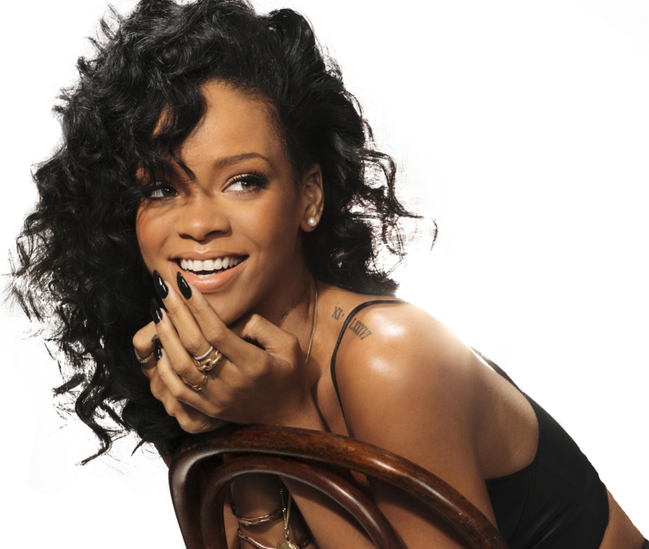
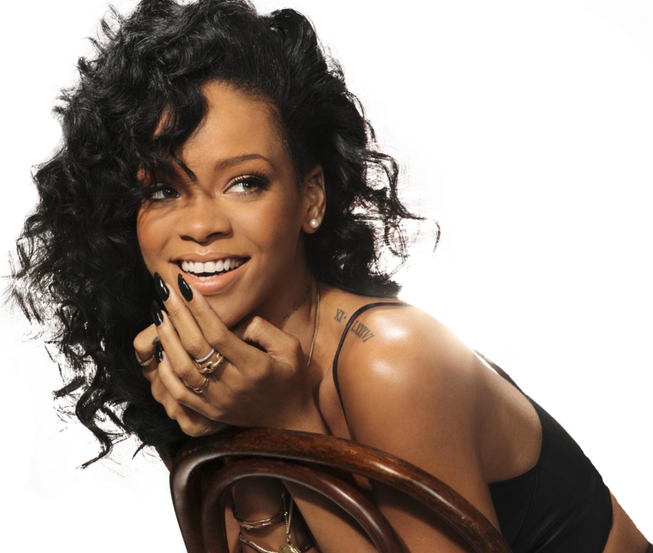

Robyn 'Rihanna' Fenty was born on February 20, 1988, in Saint Michael, Barbados. She grew up with a mother, father, two brothers and two half-sisters from her father’s previous relationships. She worked selling clothes with her father on the street. Her childhood was somewhat tough due to her father’s alcoholism and drug use. He often was abusive to her mother which is said to have been the cause of Rihanna’s severe headaches. This lasted all the way up until they finally divorced when she was 14.
 
